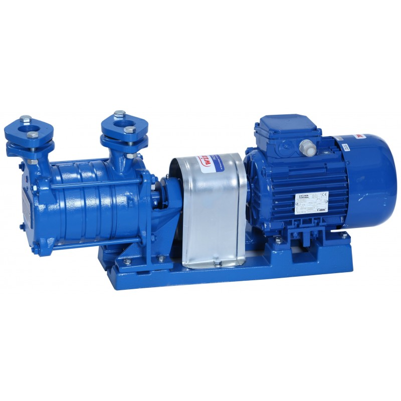
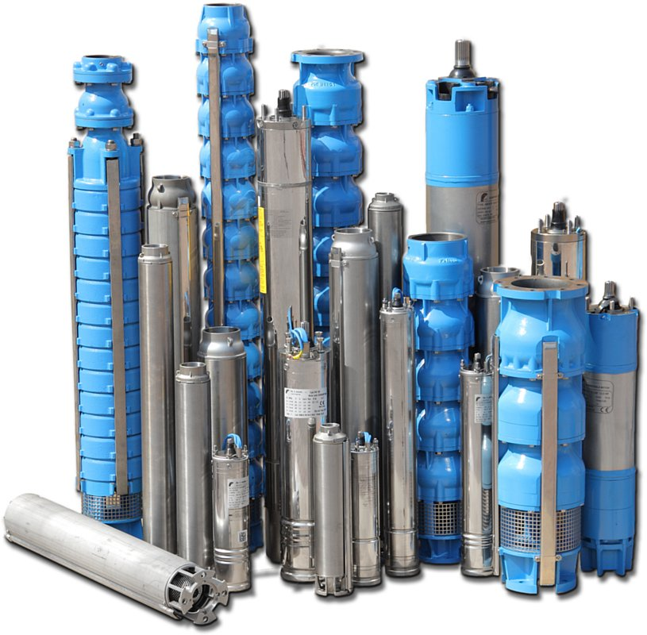
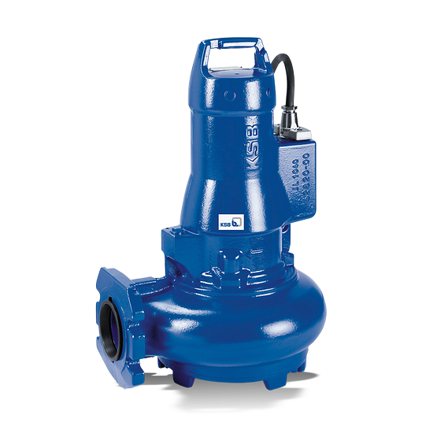
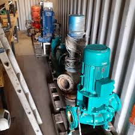
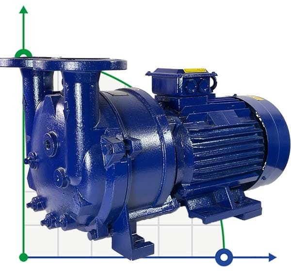

Pompa hydroforowa, znana również jako hydrofornia, to urządzenie hydrauliczne stosowane do podnoszenia ciśnienia wody w
systemach zaopatrzenia w wodę w budynkach, gospodarstwach domowych, a także w innych miejscach, gdzie potrzebne jest
utrzymanie odpowiedniego ciśnienia wody.
Działanie pompy hydroforowej polega na zbieraniu wody w zbiorniku
(tzw. hydroforze) i utrzymywaniu ciśnienia wody poprzez odpowiednią
regulację pompy. Gdy ciśnienie wody w systemie spada poniżej określonej
wartości, pompa uruchamia się automatycznie i dostarcza wodę do zbiornika.

Pompy głebinowe
Pompa głębinowa (również znana jako pompa studzienna lub pompa odwiertowa)
to urządzenie używane do pompowania wody z głębokich źródeł, takich jak studnie lub odwierty.
Jest to rodzaj pompy ssawno-tłoczącej, która działa na zasadzie obniżania ciśnienia wewnątrz rury ssawnej,
powodując wypływ wody do powierzchni.
Pompy głębinowe składają się z pompującej jednostki, która jest umieszczona pod powierzchnią wody, oraz zespołu napędowego
znajdującego się na powierzchni. Pompująca jednostka zawiera wirnik z łopatkami,
które obracają się przy użyciu energii dostarczanej przez zespół napędowy.

Pompy zatapialne
Pompy zatapialne (znane również jako pompy zanurzeniowe) to specjalne urządzenia używane do pompowania płynów, takich jak woda,
zatapiające się wewnątrz zbiornika,
Ważne jest, aby dobrać odpowiednią pompę zatapialną do konkretnego zastosowania,
biorąc pod uwagę wymagania dotyczące przepływu, głębokości pompowania i rodzaju pompowanego płynu.

Pompy Obiegowe
Pompy obiegowe, znane również jako pompy cyrkulacyjne, są urządzeniami służącymi do pompowania płynów w zamkniętych układach obiegowych.
Ich głównym zadaniem jest utrzymanie ciągłego przepływu płynu przez układ, zapewniając równomierne rozprowadzenie ciepła lub substancji
w procesach przemysłowych.
Pompy obiegowe są powszechnie stosowane w systemach grzewczych, chłodniczych i wentylacyjnych, zarówno w domach, jak i w budynkach komercyjnych.
Ich działanie polega na przekazywaniu płynu z jednego obszaru do drugiego poprzez zamknięty układ rur. W przypadku systemów grzewczych,
pompa obiegowa pompuje ciepłą wodę z kotła do grzejników lub paneli ogrzewania podłogowego, a następnie z powrotem do kotła,
tworząc tym samym cyrkulację ciepła.

Pompy Prózniowe
Pompy próżniowe są urządzeniami używanymi do usuwania gazów lub innych substancji z zamkniętych przestrzeni w celu utworzenia próżni,
czyli obszaru o niższym ciśnieniu niż otoczenie
Pompy próżniowe działają poprzez tworzenie różnicy ciśnień między wlotem a wylotem, co powoduje przepływ cząstek gazowych w kierunku
niższego ciśnienia. Istnieje wiele rodzajów pomp próżniowych, z których każdy ma swoje specyficzne zastosowania i zasady działania.

Pompy Wodne
Pompy wodne to urządzenia, które służą do pompowania wody.
Są szeroko stosowane w różnych dziedzinach, takich jak zaopatrzenie w wodę, nawadnianie roślin, odprowadzanie wody, przemysł,
budownictwo, systemy ochrony przeciwpowodziowej i wiele innych.